英文
英文居里，约里奥
编者按
詹姆斯·查德威克通过分析α粒子引发的硼转变为氮并放出一个中子的反应，估算出了中子的质量。他的计算用到了几种原子核质量的实验值。在这篇文章中，物理学家弗雷德里克·约里奥和伊雷娜·居里夫妇通过对其他反应的研究给出了一个数值更为精确并且较大的中子质量值，并且他们的计算仅使用了质子的质量而没有用到其他任何原子核的质量。根据这一较大的中子质量数值，我们可以推测原子核的β衰变是由原子核中一个中子衰变为一个质子所引发的，同时放射出一个电子和一个中微子，这一观点一直沿用至今。 英文
查德威克计算了中子的质量。在计算中，他假设硼放出的中子是由同位素
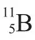
放出的，对应于核反应：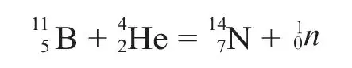
利用
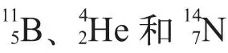
的精确质量，以及钋放射出的α射线所激发出的中子最大能量，可以计算出中子的质量是1.0068（取16O = 16）[1]。 英文
但我们认为[2]，放射出中子的是同位素
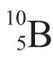
，而不是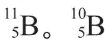
的原子核在钋放射出的α粒子的作用下，可以发生两种嬗变，其中一种放射出一个质子，另一种放射出一个中子和一个正电子，核反应方程分别为：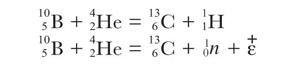
最近我们关于产生新的放射性元素的实验证实了我们对硼嬗变的解释。在
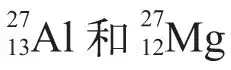
中也观察到了类似的反应。反应可以分成两步：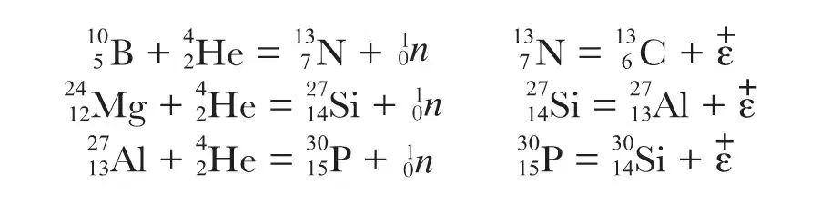
其中，
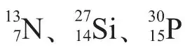
是不稳定的原子核，它们会发生衰变，同时放出正电子。 英文
硼嬗变的两种模式的完整的反应方程式如下，其中包含了所有粒子的能量和质量：
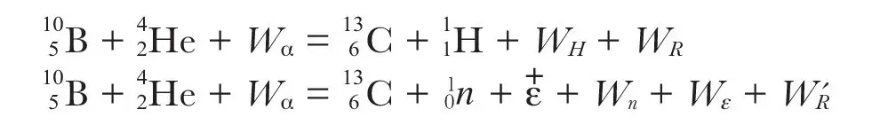
其中，Wα、WH、Wn、Wε、WR、W'R分别是反应中α粒子的能量、放出粒子的相应能量，以及反冲原子的相应能量。用第二个反应方程式减去第一个反应方程式，可以得到：
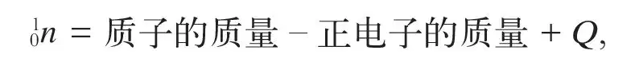
其中，
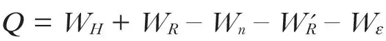
。 英文
利用铝和镁的嬗变反应方程式，也可以得到完全相同的方程。 英文
这样，我们不必用到除质子以外的其他任何原子核的质量，就可以计算出中子的质量。 英文
根据我们最近的测量，新形成的放射性元素放出的正电子的能量分布为连续谱，对
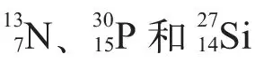
而言，连续谱的最大能量分别是：1.5×106 eV、3×106 eV和大约1.5×106 eV。放出正电子时大多伴随着中微子的放出，但是如果正电子有其最大能量，那么中微子的能量将非常小。而且最近关于中微子性质的假说认为中微子的质量为0，或者非常小。因此，在计算中我们不需要考虑中微子。在放出正电子的衰变过程中，反冲原子的能量也可以忽略不计。 英文
我们得到钋放射的α射线的能量数值（单位是106 eV），如下表所示。由此，我们分别得到三个中子质量：1.0098、1.0092、1.0089。这些值基本一致。但是第一个值最精确，即从硼原子推导出的中子质量。镁和铝中的中子能量以及镁中正电子的能量都还不是十分确定。 英文
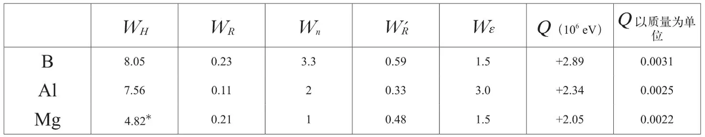
* 这个正电子能量的最大可能值与实际观测并不相符，但是通过考虑与质子组的能量平衡，佩兰已经从博特和卡拉曼的实验中推导出了这个最大值。 英文
考虑到
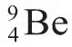
原子核的稳定性，中子的质量本应该有一个最小值1.0107。但是在确定Be的质量时很可能存在0.001的误差。 英文
我们可以取中子质量为1.010，这个值的误差大概不会超过0.0005。 英文
取中子质量为1.010时，铍被钋放出的α粒子轰击所放出的中子的最大能量约为9×106 eV。根据反应
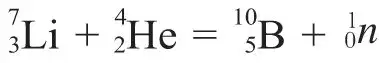
，除非认为我们采用的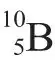
的质量太大，超过真实值0.003，否则就无法解释当锂被钋放出的α粒子轰击时，会放射出慢中子的事实。 英文
如一些作者所设想的那样，如果原子核只包含质子和中子，那么当核内部一个中子转变成一个质子，并放射出负电子和中微子的反应可能就是β发射产生的原因。相反的过程也有可能发生：一个质子转变成一个中子，并放出一个正电子和一个中微子。 英文
取中子质量为1.010时，一个中子转变为一个质子和一个负电子的反应所释放的能量是2.1×106 eV；一个质子转变成一个中子和一个正电子的反应所吸收的能量是3.1×106 eV。 英文
（王静 翻译；王乃彦 审稿）